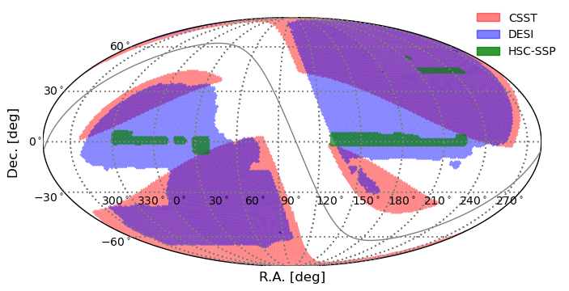
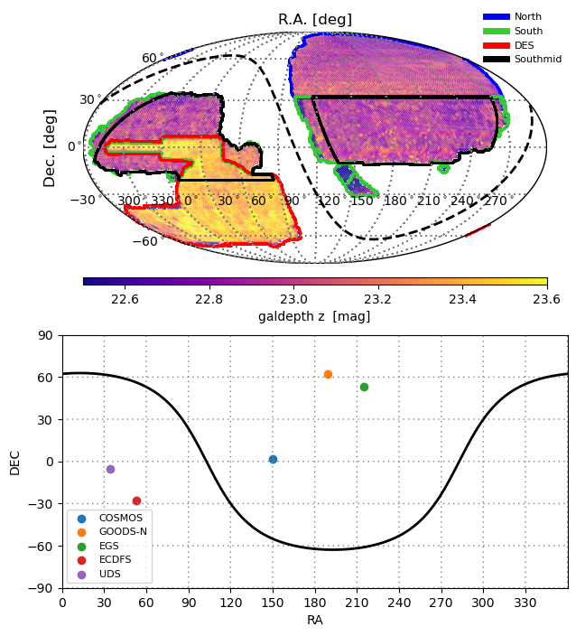

angular selection function (asfunc)
This is a manuscript of documentation.
Any problem or suggestion is welcome! (e-mail: guyizhou@sjtu.edu.cn)
module for weight maps
on going…
module for visualization (old version based on Basemap)
Since the basemap is deprecated, I am trying to update it using cartopy.
Features:
generate a new class inheriting axes class of matplotlib so that it is easy to fine-tune and add some new patches. (Requirements!!! Basemap, matplotlib<=3.4)
hpviewer function is written to plot the healpix map.
In current stage, this module has cylinder projection and mollweide projection.
import matplotlib.pyplot as plt
import asfunc
fig, axs = plt.subplots(1,2,figsize = (12,4))
m0 = asfunc.plot_block(ax = axs[0]).moll()
m1 = asfunc.plot_block(ax = axs[1]).cyl()

The demonstration 1 of sky coverage

# demo 1
from csstmock import asfunc
import numpy as np
import healpy as hp
#------- start the module for visual
import matplotlib.pyplot as plt
from csstmock.asfunc.visual_old import visual, pix2border, add_colorbar
fig, ax = plt.subplots(1,1,figsize = (8,4))
m = visual(ax = ax).moll(lon_0 = 100) # use moll projection
m.set_parallels(shift = 0) # parallels without ticklabel shift
m.set_meridians(shift = -38) # meridians with ticklabel shift -30 degree
m.set_galactic(b0 = 0, color = 'gray', lw = 1) # draw galatic plane
survey_available = ['csstv0', 'desidr9', 'hscdr3']
for ith, survey in enumerate(survey_available):
#--- read the embedding map of sky coverage of the survey
wht, nside = asfunc.skycov_healpy(survey)
pix = np.arange(12*nside*nside)
pix = pix[wht==1.0]
#--- convert to lower resolutions to speed up
a, d= hp.pix2ang(nside, pix, lonlat = True)
nside = 64; wht = np.zeros(12*nside*nside) + np.nan
pix = hp.ang2pix(nside, a, d, lonlat = True)
pix = np.unique(pix); wht[pix] = 1.0
#--- draw the sky coverage
if survey == 'csstv0': m.hpviewer(wht, npt = 1, facecolor = 'r', alpha = 0.5) #, edgecolor = 'None')
if survey == 'desidr9':m.hpviewer(wht, npt = 1, facecolor = 'b', alpha = 0.5) #, edgecolor = 'None')
if survey == 'hscdr3': m.hpviewer(wht, npt = 1, facecolor = 'g', alpha = 0.8) #, edgecolor = 'None')
#------- end the module for visual
#--- add label, title, legend or colorbar by yourself
ax.fill_between([0,1], [-1000,-1000], [1000,1000], color = 'r', alpha = 0.5, label = 'CSST' )
ax.fill_between([0,1], [-1000,-1000], [1000,1000], color = 'b', alpha = 0.5, label = 'DESI' )
ax.fill_between([0,1], [-1000,-1000], [1000,1000], color = 'g', alpha = 0.8, label = 'HSC-SSP' )
ax.legend(frameon=False, bbox_to_anchor=(0.85, 0.8) )
ax.set_xlabel('R.A. [deg]', fontsize = 12)
ax.set_ylabel('Dec. [deg]', labelpad = 20, fontsize = 12)
plt.savefig('skycov.png')
plt.show()
plt.close()
The demonstration 2 of sky coverage

# demo 2
import numpy as np
import healpy as hp
import matplotlib.pyplot as plt
from csstmock.asfunc.visual_old import visual, pix2border, add_colorbar
val = np.load('healpy256/dr9-galdepth-z.npy')
nside = 256; pix = np.arange(12*nside*nside)
#--- convert to lower resolutions to speed up
nside = 64
val = hp.ud_grade(val, nside_out = nside, pess = True)
val[val < -1E30] = np.nan
deepfield = ['COSMOS', 'GOODS-N', 'EGS', 'ECDFS', 'UDS']
alpha = [ 150., 189., 215., 53., 34.]
delta = [ 2., 62., 53., -28., -5.]
fig, axs = plt.subplots(2,1,figsize = (8,8))
m0 = visual(ax = axs[0]).moll(lon_0 = 118.5)
m1 = visual(ax = axs[1]).cyl()
#------ plot left panel
m = m0
m.set_parallels(shift = 0)
m.set_meridians(shift = -38)
m.set_galactic(b0 = 0, color = 'k', lw = 2, ls = 'dashed')
m.hpviewer(val, npt = 1, cmap=plt.get_cmap('plasma'), vmin = 22.5, vmax = 23.6)
names = ['North', 'South', 'DES', 'Southmid']
colors = ['b', 'limegreen', 'r', 'k']
for ii in range(4):
ipix = np.loadtxt('healpy256/'+names[ii]+'.txt').astype('int64')
nside = 256; val = np.zeros(12*nside*nside)
ipix_edge = pix2border(nside, ipix, nest = True )
a, d = hp.pix2ang(nside, ipix_edge, nest = True, lonlat = True)
m.scatter(a, d, color = colors[ii], s = 1 )
axs[0].plot([0,0], [-1000,-1000], color = colors[ii], lw = 5, label = names[ii] )
#--- convert to lower resolutions to speed up
ipix_edge = hp.nest2ring(nside, ipix_edge)
val[ipix_edge] = 1.0
nside = 32
val = hp.ud_grade(val, nside_out = nside, pess = False)
val[val==0] = np.nan;
m.hpviewer(val, npt=1, facecolor = colors[ii])
#--- add label, title, legend or colorbar by yourself
axs[0].legend(frameon=False, bbox_to_anchor=(0.85, 0.82), fontsize = 8 )
ticks = [22.6, 22.8, 23.0, 23.2, 23.4, 23.6]; label = 'galdepth z [mag]'
vmin = 22.5; vmax = 23.6; cmap = plt.get_cmap('plasma')
add_colorbar(axs[0], label, ticks, vmin, vmax, cmap, position = "bottom")
axs[0].set_title('R.A. [deg]', fontsize = 12)
axs[0].set_ylabel('Dec. [deg]', labelpad = 20, fontsize = 12)
#------ plot bottom panel
m = m1
m.set_galactic(b0 = 0, color = 'k', lw = 2, ls = 'solid')
for a,d,label in zip(alpha, delta, deepfield): m.scatter(a, d, label = label)
axs[1].legend(fontsize = 8)
plt.show()